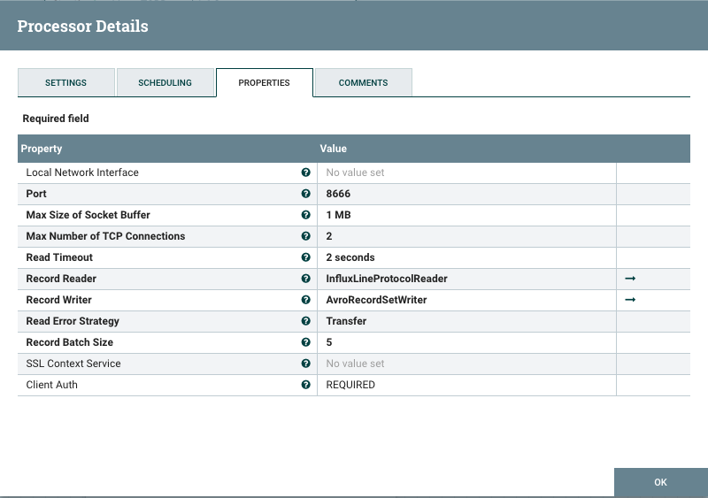
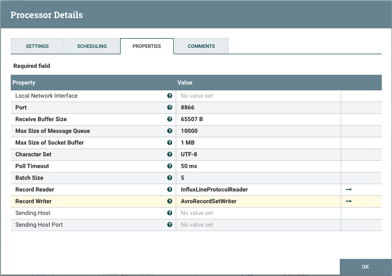

This Processor parses the InfluxDB Line Protocol data to a record. This is useful for listening data from the Telegraf, InfluxDB or IoT.
The following Apache NiFi Schema is used for the record:
[
"measurement" : "STRING",
"tags" : "MAP[STRING]",
"fields" : "MAP[CHOICE[FLOAT, LONG, BOOLEAN, STRING]]",
"timestamp" : "LONG
]
Related Apache Avro Schema:
{
"type" : "record",
"name" : "nifiRecord",
"namespace" : "org.apache.nifi",
"fields" :
[
{"name" : "measurement", "type" : "string" },
{"name" : "tags", "type" : [ "null", {"type" : "map", "values" : "string"} ]},
{"name" : "fields", "type" : {"type" : "map", "values" : [ "float", "long", "boolean", "string" ]}},
{"name" : "timestamp", "type" : [ "null", "long" ]}
]
}
Telegraf writes all metrics through the socket_writer plugin to the Apache NiFi.
[[outputs.socket_writer]]
## Apache NiFi TCP Record Lister URL
address = "tcp://127.0.0.1:8666"
data_format = "influx"

InfluxDB can send all the data it receives to configured subscription. The following is a InfluxDB query creates the subscription for the Apache NiFi:
-- Create a SUBSCRIPTION on database 'weather' and retention policy 'autogen' CREATE SUBSCRIPTION "apache-nifi" ON "weather"."autogen" DESTINATIONS ALL 'udp://127.0.0.1:8866'
